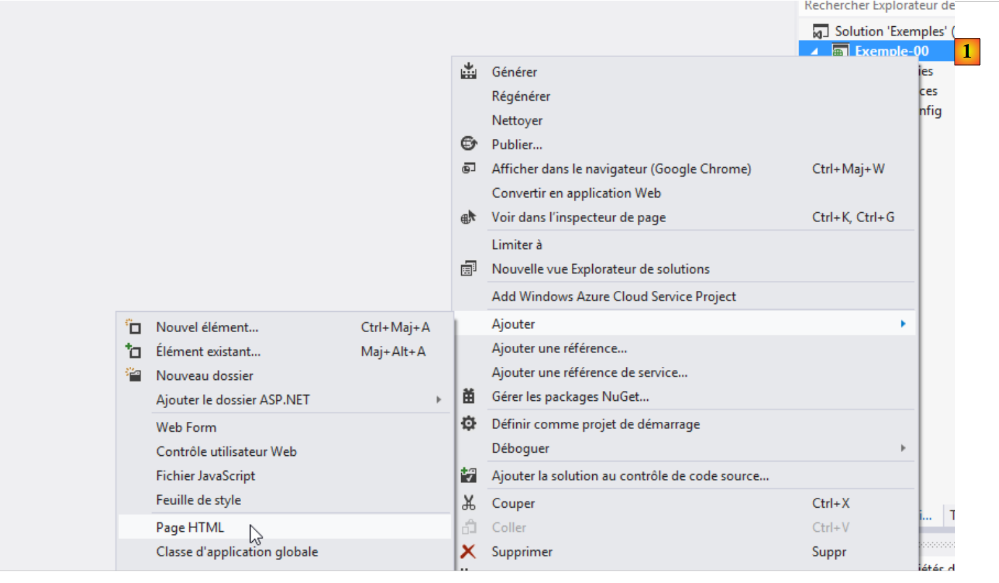
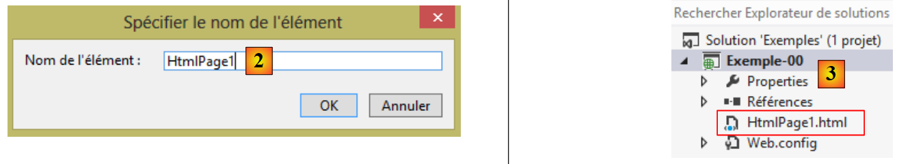
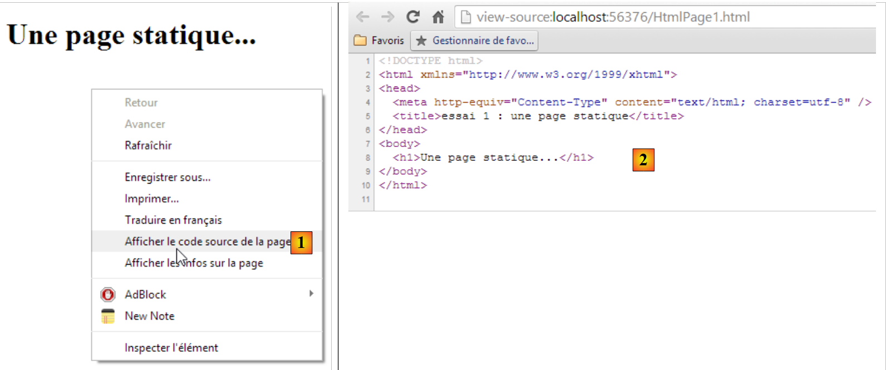
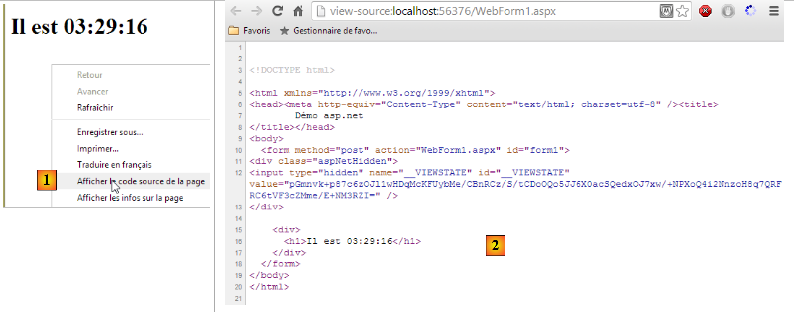
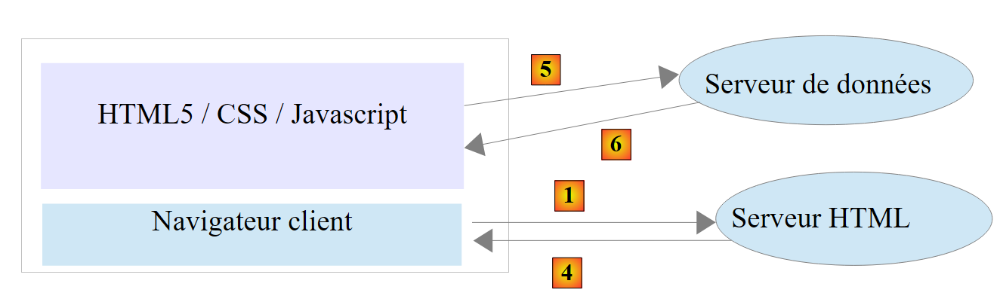
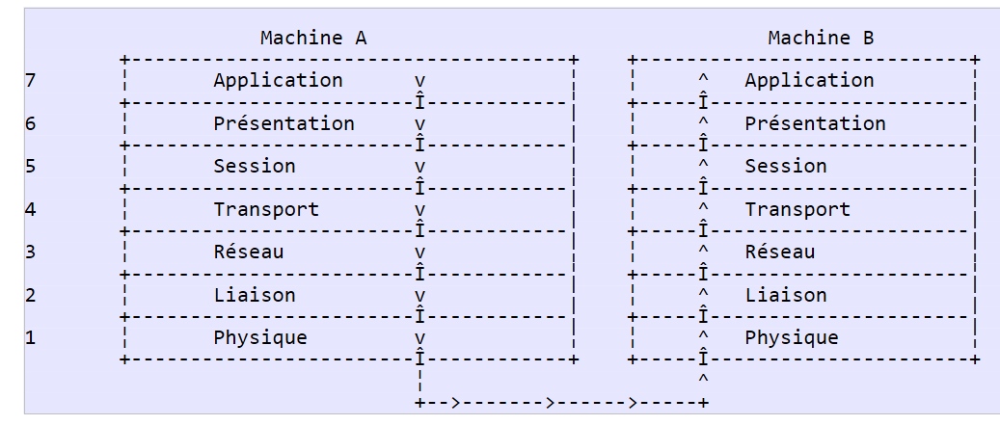
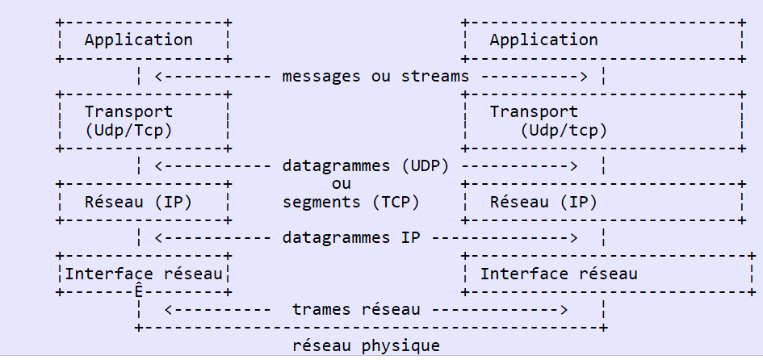
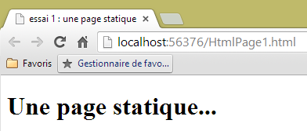
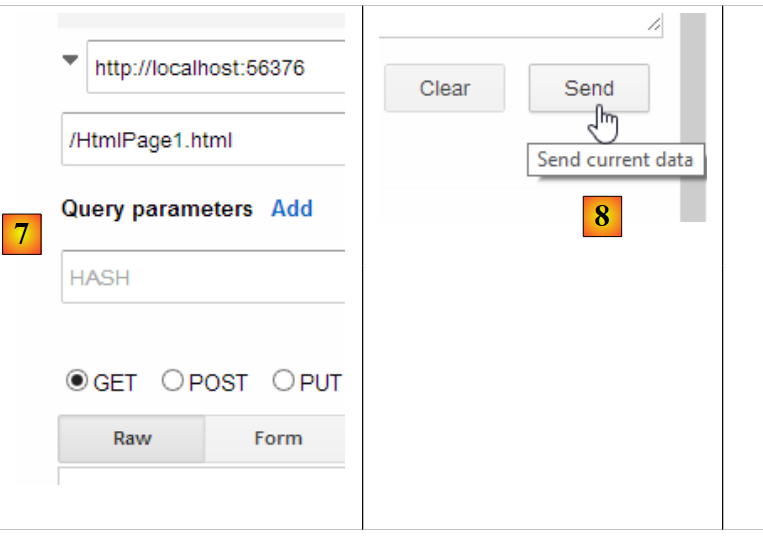
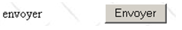

2. Nozioni di base sulla programmazione web
Lo scopo principale di questo capitolo è quello di introdurre i principi chiave della programmazione web, che sono indipendenti dalla tecnologia specifica utilizzata per implementarli. Presenta numerosi esempi che vi invitiamo a provare per "assorbire" gradualmente la filosofia dello sviluppo web. I lettori che possiedono già queste conoscenze possono passare direttamente al capitolo successivo.
I componenti di un'applicazione web sono i seguenti:

Numero | Ruolo | Esempi comuni |
1 | Sistema operativo server | Unix, Linux, Windows |
2 | Server Web | Apache (Unix, Linux, Windows) IIS (Windows + piattaforma .NET) Node.js (Unix, Linux, Windows) |
3 | Codice lato server. Può essere eseguito da moduli del server o da programmi esterni al server (CGI). | JAVASCRIPT (Node.js) PHP (Apache, IIS) JAVA (Tomcat, WebSphere, JBoss, WebLogic, ...) C#, VB.NET (IIS) |
4 | Database: può trovarsi sullo stesso computer del programma che lo utilizza oppure su un altro computer collegato via Internet. | Oracle (Linux, Windows) MySQL (Linux, Windows) Postgres (Linux, Windows) SQL Server (Windows) |
5 | Sistema operativo client | Unix, Linux, Windows |
6 | Browser Web | Chrome, Internet Explorer, Firefox, Opera, Safari, ... |
7 | Script lato client eseguiti all'interno del browser. Questi script non hanno accesso al disco del computer client. | JavaScript (tutti i browser) |
2.1. Scambio di dati in un'applicazione web con un modulo

Numero | Ruolo |
1 | Il browser richiede un URL per la prima volta (http://machine/url). Non vengono passati parametri. |
2 | Il server web invia la pagina web corrispondente a quell'URL. Può essere statica o generata dinamicamente da uno script lato server (SA) che potrebbe aver utilizzato contenuti provenienti da database (SB, SC). In questo caso, lo script rileverà che l'URL è stato richiesto senza alcun parametro e genererà la pagina web iniziale. Il browser riceve la pagina e la visualizza (CA). Gli script lato browser (CB) potrebbero aver modificato la pagina iniziale inviata dal server. Quindi, attraverso le interazioni tra l'utente (CD) e gli script (CB), la pagina web verrà modificata. In particolare, verranno compilati i moduli. |
3 | L'utente invia i dati del modulo, che devono quindi essere inviati al server web. Il browser richiede l'URL iniziale o un altro, a seconda dei casi, e contemporaneamente trasmette i valori del modulo al server. A tal fine può utilizzare due metodi: GET e POST. Una volta ricevuta la richiesta del client, il server attiva lo script (SA) associato all'URL richiesto, che rileverà i parametri e li elaborerà. |
4 | Il server fornisce la pagina web generata dal programma (SA, SB, SC). Questo passaggio è identico al precedente passaggio 2. La comunicazione procede ora secondo i passaggi 2 e 3. |
2.2. Pagine web statiche, pagine web dinamiche
Una pagina statica è rappresentata da un file HTML. Una pagina dinamica è una pagina HTML generata "al volo" dal server web.
2.2.1. Pagina HTML (HyperText Markup Language) statica
Creiamo il nostro primo progetto web utilizzando Visual Studio Express 2012. Utilizziamo l'opzione [File / Nuovo progetto]:
 |
- in [1], specificare che si desidera creare un'applicazione ASP.NET vuota;
- in [2], inserisci il nome della soluzione Visual Studio. Tutti gli esempi in questo documento saranno nella stessa soluzione;
- in [3], la cartella principale del progetto da creare;
- in [4], il nome del progetto.
Fare clic su OK.
 |
Il progetto risultante è mostrato in [5]. Lo useremo per illustrare i principi di base della programmazione web.
Iniziamo creando una pagina HTML statica:
 |
- in [1], clicca con il tasto destro del mouse sul progetto e segui le opzioni;
 |
- in [2], assegnare un nome alla pagina;
- in [3], la pagina è stata aggiunta.
Il contenuto della pagina creata è il seguente:
<!DOCTYPE html>
<html xmlns="http://www.w3.org/1999/xhtml">
<head>
<meta http-equiv="Content-Type" content="text/html; charset=utf-8"/>
<title></title>
</head>
<body>
</body>
</html>
- righe 2-10: il codice è racchiuso dal tag radice <html>;
- righe 3-6: il tag <head> delimita ciò che viene chiamato l'intestazione della pagina;
- righe 7-9: il tag <body> delimita ciò che viene chiamato corpo della pagina.
Modifichiamo questo codice come segue:
<!DOCTYPE html>
<html xmlns="http://www.w3.org/1999/xhtml">
<head>
<meta http-equiv="Content-Type" content="text/html; charset=utf-8" />
<title>essai 1 : une page statique</title>
</head>
<body>
<h1>Une page statique...</h1>
</body>
</html>
- riga 5: definisce il titolo della pagina – verrà visualizzato come titolo della finestra del browser che mostra la pagina;
- riga 8: testo in caratteri grandi (<h1>).
Visualizziamo questa pagina in un browser:
 |
- in [1], richiediamo la visualizzazione della pagina;
- in [2], l'URL della pagina visualizzata;
- in [3], il titolo della finestra – fornito dal tag <title> della pagina;
- in [4], il corpo della pagina – fornito dal tag <h1>.
Diamo un'occhiata a [1], il codice HTML ricevuto dal browser:
 |
- in [2], il browser ha ricevuto la pagina HTML che avevamo creato. L'ha interpretata e l'ha visualizzata come immagine.
2.2.2. Una pagina ASP.NET
Ora creiamo una pagina ASP.NET. Si tratta di una pagina HTML che può contenere codice lato server e genera alcune parti della pagina. Seguiamo un processo simile a quello della creazione della pagina HTML:
 |
- In [1], una pagina ASP.NET è denominata [Web Form];
 |
- In [2], viene assegnato un nome alla nuova pagina;
- in [3], la pagina è stata creata.
Il codice della pagina creata è il seguente:
<%@ Page Language="C#" AutoEventWireup="true" CodeBehind="WebForm1.aspx.cs" Inherits="Exemple_00.WebForm1" %>
<!DOCTYPE html>
<html xmlns="http://www.w3.org/1999/xhtml">
<head runat="server">
<meta http-equiv="Content-Type" content="text/html; charset=utf-8"/>
<title></title>
</head>
<body>
<form id="form1" runat="server">
<div>
</div>
</form>
</body>
</html>
Vediamo tag HTML che abbiamo già incontrato in precedenza. I tag con l'attributo [runat="server"] sono tag che verranno elaborati dal server e convertiti in tag HTML semplici. Quindi ciò che vediamo sopra non è, come nel caso della precedente pagina statica, il codice HTML che il browser riceverà. Questa è definita una pagina dinamica: il flusso HTML inviato al server è generato dal codice eseguito sul lato server. Modifichiamo la pagina come segue:
<%@ Page Language="C#" AutoEventWireup="true" CodeBehind="WebForm1.aspx.cs" Inherits="Exemple_00.WebForm1" %>
<!DOCTYPE html>
<html xmlns="http://www.w3.org/1999/xhtml">
<head runat="server">
<meta http-equiv="Content-Type" content="text/html; charset=utf-8" />
<title>Démo asp.net</title>
</head>
<body>
<form id="form1" runat="server">
<div>
<h1>Il est <% =DateTime.Now.ToString("hh:mm:ss") %></h1>
</div>
</form>
</body>
</html>
- Riga 8: Assegniamo un titolo alla pagina;
- riga 13: visualizziamo il testo generato dal codice C#. Questo codice è racchiuso tra i tag <% %>. Questo codice C# visualizza l'ora corrente nel formato ore:minuti:secondi.
[1] Visualizziamo questa pagina in un browser:
 |
- in [1], richiediamo la visualizzazione della pagina;
- in [2], l'URL della pagina visualizzata;
- in [3], il titolo della finestra – fornito dal tag <title> della pagina;
- in [4], il corpo della pagina – fornito dal tag <h1>.
Se aggiorniamo la pagina (F5), otteniamo una visualizzazione diversa (ora nuova) anche se l'URL non cambia. Questo è l'aspetto dinamico della pagina: il suo contenuto può cambiare nel tempo. Ora diamo un'occhiata al codice HTML ricevuto dal browser:
 |
- in [1], visualizziamo il codice sorgente della pagina;
- in [2]: questa volta, il codice HTML ricevuto non è quello che abbiamo creato noi, ma quello generato dal server web a partire dalle informazioni contenute nella nostra pagina ASP.NET.
2.2.3. Conclusione
Da quanto sopra esposto, possiamo vedere che le pagine dinamiche e quelle statiche sono fondamentalmente diverse.
2.3. Script lato browser
Una pagina HTML può contenere script che verranno eseguiti dal browser. Il principale linguaggio di scripting lato browser è attualmente (settembre 2013) JavaScript. Sono state create centinaia di librerie utilizzando questo linguaggio per semplificare la vita degli sviluppatori.
Creiamo una nuova pagina HTML [1] nel progetto che abbiamo già creato:
 |
Modifica il file [HtmlPage2.html] con il seguente contenuto:
<!DOCTYPE html>
<html xmlns="http://www.w3.org/1999/xhtml">
<head>
<meta http-equiv="Content-Type" content="text/html; charset=utf-8" />
<title>exemple Javascript</title>
<script type="text/javascript">
function réagir() {
alert("Vous avez cliqué sur le bouton !");
}
</script>
</head>
<body>
<input type="button" value="Cliquez-moi" onclick="réagir()" />
</body>
</html>
- riga 13: definisce un pulsante (attributo type) con il testo "Cliccami" (attributo value). Quando viene cliccato, viene eseguita la funzione JavaScript [react] (attributo onclick);
- righe 6–10: uno script JavaScript;
- righe 7-9: la funzione [react];
- riga 8: visualizza una finestra di dialogo con il messaggio [Hai cliccato sul pulsante].
Visualizziamo la pagina in un browser:
 |
- in [1], la pagina visualizzata;
- in [2], la finestra di dialogo che appare quando si clicca sul pulsante.
Quando si fa clic sul pulsante, non avviene alcuna comunicazione con il server. Il codice JavaScript viene eseguito dal browser.
Grazie al vasto numero di librerie JavaScript disponibili, ora possiamo incorporare applicazioni complete direttamente nel browser. Ciò porta alle seguenti architetture:
 |
- 1-4: il server HTML è un server per pagine statiche HTML5/CSS/JavaScript;
- 5-6: le pagine HTML5/CSS/JavaScript fornite interagiscono direttamente con un server dati. Questo server fornisce solo dati, senza markup HTML. JavaScript inserisce questi dati nelle pagine HTML già presenti nel browser.
In questa architettura, il codice JavaScript può diventare gonfiato. Pertanto, miriamo a strutturarlo in livelli, come facciamo per il codice lato server:
 |
- il livello [UI] è quello che interagisce con l'utente;
- il livello [DAO] interagisce con il server dati;
- il livello [logica di business] contiene le procedure di business che non interagiscono né con l'utente né con il server dati. Questo livello potrebbe non esistere.
2.4. Comunicazione client-server
Torniamo al nostro diagramma iniziale che illustra i componenti di un'applicazione web:

Qui ci interessano gli scambi tra la macchina client e la macchina server. Questi avvengono su una rete, e vale la pena rivedere la struttura generale degli scambi tra due macchine remote.
2.4.1. Il modello OSI
Il modello di rete aperto noto come OSI (Open Systems Interconnection Reference Model), definito dall'ISO (International Standards Organization), descrive una rete ideale in cui la comunicazione tra macchine può essere rappresentata da un modello a sette livelli:
 |
Ogni livello riceve servizi dal livello sottostante e fornisce i propri servizi al livello sovrastante. Supponiamo che due applicazioni situate su macchine diverse, A e B, vogliano comunicare: lo fanno a livello di Applicazione. Non hanno bisogno di conoscere tutti i dettagli del funzionamento della rete: ogni applicazione passa le informazioni che desidera trasmettere al livello sottostante, ovvero il livello di Presentazione. L'applicazione deve quindi conoscere solo le regole per interfacciarsi con il livello di Presentazione. Una volta che le informazioni si trovano nel livello di Presentazione, vengono passate secondo altre regole al livello di Sessione, e così via, fino a quando le informazioni raggiungono il mezzo fisico e vengono trasmesse fisicamente alla macchina di destinazione. Lì, subiranno il processo inverso di quello che hanno subito sulla macchina di invio.
A ogni livello, il processo mittente responsabile dell'invio delle informazioni le invia a un processo ricevente sull'altra macchina appartenente allo stesso livello. Lo fa secondo determinate regole note come protocollo di livello. Abbiamo quindi il seguente diagramma di comunicazione finale:
 |
I ruoli dei diversi livelli sono i seguenti:
Fisico | Garantisce la trasmissione di bit su un mezzo fisico. Questo livello include apparecchiature terminali di elaborazione dati (DPTE) quali terminali o computer, nonché apparecchiature di terminazione del circuito dati (DCTE) quali modulatori/demodulatori, multiplexer a i e concentratori. Le considerazioni chiave a questo livello sono:
|
Collegamento dati | Nasconde le caratteristiche fisiche del livello fisico. Rileva e corregge gli errori di trasmissione. |
Rete | Gestisce il percorso che le informazioni inviate sulla rete devono seguire. Questo processo è chiamato routing: determinare il percorso che le informazioni devono seguire per raggiungere la loro destinazione. |
Trasporto | Consente la comunicazione tra due applicazioni, mentre i livelli precedenti permettevano solo la comunicazione tra macchine. Un servizio fornito da questo livello può essere il multiplexing: il livello di trasporto può utilizzare una singola connessione di rete (da macchina a macchina) per trasmettere dati appartenenti a più applicazioni. |
Sessione | Questo livello fornisce servizi che consentono a un'applicazione di aprire e mantenere una sessione di lavoro su una macchina remota. |
Presentazione | Ha lo scopo di standardizzare la rappresentazione dei dati tra macchine diverse. Pertanto, i dati provenienti dalla macchina A saranno "formattati" dal livello di Presentazione della macchina A secondo un formato standard prima di essere inviati in rete. Una volta raggiunto il livello di Presentazione della macchina di destinazione B, che li riconoscerà grazie al loro formato standard, saranno formattati in modo diverso in modo che l'applicazione sulla macchina B possa riconoscerli. |
Applicazione | A questo livello si trovano applicazioni che sono generalmente vicine all'utente, come la posta elettronica o il trasferimento di file. |
2.4.2. Il modello TCP/IP
Il modello OSI è un modello ideale. La suite di protocolli TCP/IP lo approssima nel modo seguente:
 |
- l'interfaccia di rete (la scheda di rete del computer) svolge le funzioni dei livelli 1 e 2 del modello OSI
- il livello IP (Internet Protocol) svolge le funzioni del livello 3 (rete)
- il livello TCP (Transmission Control Protocol) o UDP (User Datagram Protocol) svolge le funzioni del livello 4 (trasporto). Il protocollo TCP garantisce che i pacchetti di dati scambiati tra le macchine raggiungano la loro destinazione. In caso contrario, invia nuovamente i pacchetti persi. Il protocollo UDP non svolge questo compito, quindi spetta allo sviluppatore dell'applicazione farlo. Questo è il motivo per cui, su Internet — che non è una rete affidabile al 100% — il protocollo TCP è il più utilizzato. Si parla in questo caso di rete TCP-IP.
- Il livello Applicazione copre le funzioni dei livelli da 5 a 7 del modello OSI.
Le applicazioni web risiedono nel livello Applicazione e quindi si basano sui protocolli TCP/IP. I livelli Applicazione delle macchine client e server scambiano messaggi, che vengono affidati ai livelli da 1 a 4 del modello per essere instradati a destinazione. Per comunicare tra loro, i livelli Applicazione di entrambe le macchine devono “parlare” la stessa lingua o lo stesso protocollo. Il protocollo utilizzato dalle applicazioni Web si chiama HTTP (HyperText Transfer Protocol). Si tratta di un protocollo basato su testo, il che significa che le macchine scambiano righe di testo attraverso la rete per comunicare. Questi scambi sono standardizzati, il che significa che il client dispone di una serie di messaggi per comunicare al server esattamente ciò che desidera, e anche il server dispone di una serie di messaggi per fornire al client la propria risposta. Questo scambio di messaggi assume la seguente forma:

Client --> Server
Quando il client effettua una richiesta al server web, invia
- righe di testo in formato HTTP per specificare ciò che desidera;
- una riga vuota;
- facoltativamente un documento.
Server --> Client
Quando il server risponde al client, invia
- righe di testo in formato HTTP per indicare cosa sta inviando;
- una riga vuota;
- facoltativamente un documento.
Gli scambi seguono quindi lo stesso formato in entrambe le direzioni. In entrambi i casi, può essere inviato un documento, anche se è raro che un client invii un documento al server. Ma il protocollo HTTP lo consente. Questo è ciò che permette, ad esempio, agli abbonati di un ISP di caricare vari documenti sul proprio sito web personale ospitato da quell'ISP. I documenti scambiati possono essere di qualsiasi tipo. Consideriamo un browser che richiede una pagina web contenente immagini:
- il browser si connette al server web e richiede la pagina desiderata. Le risorse richieste sono identificate in modo univoco dagli URL (Uniform Resource Locator). Il browser invia solo le intestazioni HTTP e nessun documento.
- Il server risponde. Innanzitutto invia le intestazioni HTTP indicando il tipo di risposta che sta inviando. Potrebbe trattarsi di un errore se la pagina richiesta non esiste. Se la pagina esiste, il server indicherà nelle intestazioni HTTP della sua risposta che invierà un documento HTML (HyperText Markup Language) a seguire. Questo documento è una sequenza di righe di testo in formato HTML. Il testo HTML contiene tag (indicatori) che forniscono al browser le istruzioni su come visualizzare il testo.
- Il client sa dalle intestazioni HTTP del server che riceverà un documento HTML. Analizzerà questo documento e potrebbe notare che contiene riferimenti a immagini. Queste immagini non sono incluse nel documento HTML. Effettua quindi una nuova richiesta allo stesso server web per richiedere la prima immagine di cui ha bisogno. Questa richiesta è identica a quella effettuata al punto 1, tranne per il fatto che la risorsa richiesta è diversa. Il server elaborerà questa richiesta inviando l'immagine richiesta al client. Questa volta, nella sua risposta, le intestazioni HTTP specificheranno che il documento inviato è un'immagine e non un documento HTML.
- Il client recupera l'immagine inviata. I passaggi 3 e 4 verranno ripetuti fino a quando il client (di solito un browser) non avrà tutti i documenti necessari per visualizzare l'intera pagina.
2.4.3. Il protocollo HTTP
Esploriamo il protocollo HTTP utilizzando alcuni esempi. Cosa si scambiano un browser e un server web?
Un servizio web o servizio HTTP è un servizio TCP/IP che in genere funziona sulla porta 80. Può funzionare su una porta diversa. In tal caso, il browser client dovrebbe specificare quella porta nell'URL richiesto. Un URL ha generalmente la seguente forma:
protocollo://host[:porta]/percorso/info
dove
protocollo | http per il servizio Web. Un browser può anche fungere da client per FTP, news, Telnet e altri servizi. |
macchina | nome della macchina che ospita il servizio Web |
porta | Porta del servizio Web. Se è 80, il numero di porta può essere omesso. Questo è il caso più comune |
percorso | percorso della risorsa richiesta |
info | informazioni aggiuntive fornite al server per specificare la richiesta del client |
Cosa fa un browser quando un utente richiede il caricamento di un URL?
- Stabilisce una connessione TCP/IP con la macchina e la porta specificate nella porzione machine[:port] dell’URL. Stabilire una connessione TCP/IP significa creare un “canale” di comunicazione tra due macchine. Una volta stabilito questo canale, tutte le informazioni scambiate tra le due macchine passeranno attraverso di esso. La creazione di questo canale TCP/IP non coinvolge ancora il protocollo HTTP del Web.
- Una volta stabilita la connessione TCP/IP, il client invia la sua richiesta al server web inviando righe di testo (comandi) in formato HTTP. Invia la parte path/info dell'URL al server
- Il server risponderà allo stesso modo e attraverso la stessa connessione
- Una delle due parti deciderà di chiudere la connessione. Ciò dipende dal protocollo HTTP utilizzato. Con HTTP 1.0, il server chiude la connessione dopo ciascuna delle sue risposte. Ciò costringe un client che deve effettuare più richieste per recuperare i vari documenti che compongono una pagina web ad aprire una nuova connessione per ogni richiesta, il che comporta un costo. Con il protocollo HTTP/1.1, il client può indicare al server di mantenere aperta la connessione fino a quando non gli ordina di chiuderla. Può quindi recuperare tutti i documenti di una pagina web utilizzando un'unica connessione e chiudere la connessione stessa una volta ottenuto l'ultimo documento. Il server rileverà questa chiusura e chiuderà a sua volta la connessione.
Per esaminare gli scambi tra un client e un server web, useremo l'estensione [Advanced Rest Client] per il browser Chrome che abbiamo installato nella Sezione 1.3. Ci troveremo nella seguente situazione:

Il server web può essere qualsiasi server. In questo caso, il nostro obiettivo è esaminare gli scambi che avverranno tra il browser e il server web. In precedenza, abbiamo creato la seguente pagina HTML statica:
<!DOCTYPE html>
<html xmlns="http://www.w3.org/1999/xhtml">
<head>
<meta http-equiv="Content-Type" content="text/html; charset=utf-8" />
<title>essai 1 : une page statique</title>
</head>
<body>
<h1>Une page statique...</h1>
</body>
</html>
che visualizziamo in un browser:

Possiamo vedere che l'URL richiesto è: http://localhost:56376/HtmlPage1.html. Il server web è quindi localhost (=macchina locale) e la porta 56376. Utilizziamo l'applicazione [Advanced Rest Client] per richiedere lo stesso URL:
 |
- in [1], avvia l'applicazione (nella scheda [Applicazioni] di una nuova scheda di Chrome);
- in [2], selezionare l'opzione [Request];
- in [3], specificare il server da interrogare: http://localhost:56376;
- in [4], specificare l'URL richiesto: /HtmlPage1.html;
- in [5], aggiungi eventuali parametri all'URL. Nessuno in questo caso;
- in [6], specificare il metodo HTTP utilizzato per la richiesta, in questo caso GET.
Ciò genera la seguente richiesta:
 |
La richiesta preparata in questo modo [7] viene inviata al server tramite [8]. La risposta ricevuta è quindi la seguente:
 |
Abbiamo accennato in precedenza al fatto che gli scambi client-server assumono la seguente forma:
- In [1] è possibile vedere le intestazioni HTTP inviate dal browser nella sua richiesta. Non aveva alcun documento da inviare;
- In [2], vediamo le intestazioni HTTP inviate dal server in risposta. In [3], vediamo il documento che ha inviato.
In [3], possiamo vedere la pagina HTML statica che abbiamo inserito sul server web.
Esaminiamo la richiesta HTTP del browser:
- La riga 1 non è stata visualizzata dall'applicazione;
- Riga 2: il browser si identifica con l'intestazione [User-Agent];
- Riga 3: il browser indica che sta inviando al server un documento di testo (text/plain) in formato UTF-8. In realtà, in questo caso, il browser non ha inviato alcun documento;
- riga 4: il browser indica che accetta qualsiasi tipo di documento in risposta;
- riga 5: il browser specifica i formati di documento accettati;
- riga 6: il browser specifica le lingue che preferisce in ordine di preferenza.
Il server ha risposto inviando le seguenti intestazioni HTTP:
- riga 1: non è stata visualizzata dall'applicazione;
- riga 3: il server si identifica, in questo caso un server Microsoft IIS;
- riga 5: indica la tecnologia che ha generato la risposta, in questo caso ASP.NET;
- riga 6: data e ora della risposta;
- riga 7: il tipo di documento inviato dal server. In questo caso, un documento HTML;
- riga 12: la dimensione in byte del documento HTML inviato.
2.4.4. Conclusione
Abbiamo esaminato la struttura della richiesta di un client web e la risposta del server ad essa utilizzando alcuni esempi. La comunicazione avviene tramite il protocollo HTTP, un insieme di comandi testuali scambiati tra le due parti. La richiesta del client e la risposta del server condividono la seguente struttura:
I due comandi più comuni per richiedere una risorsa sono GET e POST. Il comando GET non è accompagnato da un documento. Il comando POST, invece, è accompagnato da un documento che molto spesso è una stringa di caratteri contenente tutti i valori inseriti nel modulo. Il comando HEAD consente di richiedere solo le intestazioni HTTP e non è accompagnato da un documento.
In risposta alla richiesta di un client, il server invia una risposta con la stessa struttura. La risorsa richiesta viene trasmessa nella sezione [Document], a meno che il comando del client non fosse HEAD, nel qual caso vengono inviate solo le intestazioni HTTP.
2.5. Nozioni di base sull'HTML
Un browser web può visualizzare vari documenti, il più comune dei quali è il documento HTML (HyperText Markup Language). Si tratta di testo formattato utilizzando tag nella forma <tag>testo</tag>. Pertanto, il testo <B>importante</B> visualizzerà il testo "importante" in grassetto. Esistono tag autonomi come il tag <hr/>, che visualizza una linea orizzontale. Non esamineremo tutti i tag che si possono trovare nel testo HTML. Esistono molti programmi software WYSIWYG che consentono di creare una pagina web senza scrivere una sola riga di codice HTML. Questi strumenti generano automaticamente il codice HTML per un layout creato utilizzando il mouse e controlli predefiniti. È quindi possibile inserire (utilizzando il mouse) una tabella nella pagina e quindi visualizzare il codice HTML generato dal software per scoprire i tag da utilizzare per definire una tabella su una pagina web. È semplicissimo. Inoltre, la conoscenza dell'HTML è essenziale poiché le applicazioni web dinamiche devono generare autonomamente il codice HTML da inviare ai client web. Questo codice viene generato a livello di programmazione e, ovviamente, è necessario sapere cosa generare affinché il client riceva la pagina web desiderata.
Per riassumere, non è necessario conoscere l'intero linguaggio HTML per iniziare a programmare per il web. Tuttavia, questa conoscenza è necessaria e può essere acquisita attraverso l'uso di editor di pagine web WYSIWYG come DreamWeaver e decine di altri. Un altro modo per scoprire le complessità dell'HTML è navigare sul web e visualizzare il codice sorgente delle pagine che presentano elementi interessanti che non avete mai incontrato prima.
2.5.1. Un esempio
Considera il seguente esempio, che include alcuni elementi comunemente presenti in un documento web, come:
- una tabella;
- un'immagine;
- un link.
 |
Un documento HTML ha generalmente la seguente struttura:
<html> <head> <title>Un titolo</title> ... </head> <attributi del corpo> ... </body></html>
L'intero documento è racchiuso tra i tag <html>...</html>. È composto da due parti:
- <head>...</head>: questa è la parte non visualizzabile del documento. Fornisce informazioni al browser che visualizzerà il documento. Spesso contiene i tag <title>...</title>, che impostano il testo che apparirà nella barra del titolo del browser. Può contenere anche altri tag, in particolare quelli che definiscono le parole chiave del documento, che vengono poi utilizzate dai motori di ricerca. Questa sezione può contenere anche script, solitamente scritti in JavaScript o VBScript, che verranno eseguiti dal browser.
- <attributi del body>...</body>: Questa è la sezione che verrà visualizzata dal browser. I tag HTML contenuti in questa sezione indicano al browser il layout visivo "desiderato" per il documento. Ogni browser interpreta questi tag a modo suo. Di conseguenza, due browser possono visualizzare lo stesso documento web in modo diverso. Questa è generalmente una delle sfide che devono affrontare i web designer.
Il codice HTML per il nostro documento di esempio è il seguente:
<!DOCTYPE html>
<html xmlns="http://www.w3.org/1999/xhtml">
<head>
<meta http-equiv="Content-Type" content="text/html; charset=utf-8" />
<title>balises</title>
</head>
<body style="height: 400px; width: 400px; background-image: url(images/standard.jpg)">
<h1 style="text-align: center">Les balises HTML</h1>
<hr />
<table border="1">
<thead>
<tr>
<th>Colonne 1</th>
<th>Colonne 2</th>
<th>Colonne 3</th>
</tr>
</thead>
<tbody>
<tr>
<td>cellule(1,1)</td>
<td style="width: 150px; text-align: center;">cellule(1,2)</td>
<td>cellule(1,3)</td>
</tr>
<tr>
<td>cellule(2,1)</td>
<td>cellule(2,2)</td>
<td>cellule(2,3</td>
</tr>
</tbody>
</table>
<table border="0">
<tr>
<td>Une image</td>
<td>
<img border="0" src="/images/cerisier.jpg"/></td>
</tr>
<tr>
<td>le site de l'ISTIA</td>
<td><a href="http://istia.univ-angers.fr">ici</a></td>
</tr>
</table>
</body>
</html>
HTML | Tag HTML ed esempi |
titolo del documento | <title>tag</title> (riga 5) Il testo "tags" apparirà nella barra del titolo del browser quando il documento viene visualizzato |
barra orizzontale | <hr/>: visualizza una linea orizzontale (riga 10) |
tabella | <attributi tabella>....</table>: per definire la tabella (righe 12, 32) <thead>...</thead>: per definire le intestazioni delle colonne (righe 13, 19) <tbody>...</tbody>: per definire il contenuto della tabella (righe 20, 31) <tr attributes>...</tr>: per definire una riga (righe 21, 25) <attributi td>...</td>: per definire una cella (riga 22) esempi: ...</table>: l'attributo border definisce lo spessore del bordo della tabella <td style="width: 150px; text-align: center;">cell(1,2)</td>: definisce una cella il cui contenuto sarà cell(1,2). Questo contenuto sarà centrato orizzontalmente (text-align: center). La cella avrà una larghezza di 150 pixel (width: 150px) |
immagine | <img border="0" src="/images/cherrytree.jpg"/> (riga 38): definisce un'immagine senza bordo (border="0") il cui file sorgente è /images/cherrytree.jpg sul server web (src="/images/cherrytree.jpg"). Questo collegamento si trova in un documento web accessibile tramite l'URL http://localhost:port/html/balises.htm. Pertanto, il browser richiederà l'URL http://localhost:port/images/cerisier.jpg per recuperare l'immagine qui referenziata. |
link | <a href="http://istia.univ-angers.fr">qui</a> (riga 42): fa sì che il testo "qui" funga da collegamento all'URL http://istia.univ-angers.fr. |
sfondo della pagina | <body style="height:400px;width:400px;background-image:url(images/standard.jpg)"> (riga 8): specifica che l'immagine da utilizzare come sfondo della pagina si trova all'URL /images/standard.jpg sul server web. Nel contesto del nostro esempio, il browser richiederà l'URL http://localhost:port/images/standard.jpg per recuperare questa immagine di sfondo. Inoltre, il corpo del documento verrà visualizzato all'interno di un rettangolo alto 400 pixel e largo 400 pixel. |
Questo semplice esempio mostra che per visualizzare l'intero documento, il browser deve effettuare tre richieste al server:
- http://localhost:port/html/balises.htm per recuperare il codice sorgente HTML del documento
- http://localhost:port/images/cerisier.jpg per recuperare l'immagine cerisier.jpg
- http://localhost:port/images/standard.jpg per recuperare l'immagine di sfondo standard.jpg
2.5.2. Un modulo HTML
L'esempio seguente mostra un modulo:

Il codice HTML che produce questa visualizzazione è il seguente:
<!DOCTYPE html>
<html xmlns="http://www.w3.org/1999/xhtml">
<head>
<meta http-equiv="Content-Type" content="text/html; charset=utf-8" />
<title>formulaire</title>
<script type="text/javascript">
function effacer() {
alert("Vous avez cliqué sur le bouton Effacer");
}
</script>
</head>
<body style="height: 400px; width: 400px; background-image: url(images/standard.jpg)">
<h1 style="text-align: center">Formulaire HTML</h1>
<form method="post" action="FormulairePost.aspx">
<table border="0">
<tr>
<td>Etes-vous marié(e)</td>
<td>
<input type="radio" value="Oui" name="R1" />Oui
<input type="radio" name="R1" value="non" checked="checked" />Non
</td>
</tr>
<tr>
<td>Cases à cocher</td>
<td>
<input type="checkbox" name="C1" value="un" />1
<input type="checkbox" name="C2" value="deux" checked="checked" />2
<input type="checkbox" name="C3" value="trois" />3
</td>
</tr>
<tr>
<td>Champ de saisie</td>
<td>
<input type="text" name="txtSaisie" size="20" value="qqs mots" />
</td>
</tr>
<tr>
<td>Mot de passe</td>
<td>
<input type="password" name="txtMdp" size="20" value="unMotDePasse" />
</td>
</tr>
<tr>
<td>Boîte de saisie</td>
<td>
<textarea rows="2" name="areaSaisie" cols="20">
ligne1
ligne2
ligne3
</textarea>
</td>
</tr>
<tr>
<td>combo</td>
<td>
<select size="1" name="cmbValeurs">
<option value="1">choix1</option>
<option selected="selected" value="2">choix2</option>
<option value="3">choix3</option>
</select>
</td>
</tr>
<tr>
<td>liste à choix simple</td>
<td>
<select size="3" name="lst1">
<option selected="selected" value="1">liste1</option>
<option value="2">liste2</option>
<option value="3">liste3</option>
<option value="4">liste4</option>
<option value="5">liste5</option>
</select>
</td>
</tr>
<tr>
<td>liste à choix multiple</td>
<td>
<select size="3" name="lst2" multiple="multiple">
<option value="1" selected="selected">liste1</option>
<option value="2">liste2</option>
<option selected="selected" value="3">liste3</option>
<option value="4">liste4</option>
<option value="5">liste5</option>
</select>
</td>
</tr>
<tr>
<td>bouton</td>
<td>
<input type="button" value="Effacer" name="cmdEffacer" onclick="effacer()" />
</td>
</tr>
<tr>
<td>envoyer</td>
<td>
<input type="submit" value="Envoyer" name="cmdRenvoyer" />
</td>
</tr>
<tr>
<td>rétablir</td>
<td>
<input type="reset" value="Rétablir" name="cmdRétablir" />
</td>
</tr>
</table>
<input type="hidden" name="secret" value="uneValeur" />
</form>
</body>
</html>
L'associazione visiva tra <--> e il tag HTML è la seguente:
Visivo | Tag HTML |
form | <form method="post" action="..."> |
campo di immissione | <input type="text" name="txtInput" size="20" value="alcune parole" /> |
campo di immissione nascosto | <input type="password" name="txtMdp" size="20" value="unMotDePasse" /> |
campo di immissione multilinea | <textarea rows="2" name="inputArea" cols="20"> riga1 riga2 riga3 </textarea> |
pulsanti di opzione | <input type="radio" value="Sì" name="R1" />Sì <input type="radio" name="R1" value="No" checked="checked" />No |
caselle di controllo | <input type="checkbox" name="C1" value="uno" />1 <input type="checkbox" name="C2" value="due" checked="checked" />2 <input type="checkbox" name="C3" value="tre" />3 |
Menu a tendina | <select size="1" name="cmbValues"> <option value="1">scelta1</option> <option selected="selected" value="2">opzione2</option> <option value="3">opzione3</option> </select> |
elenco a selezione singola | <select size="3" name="lst1"> <option selected="selected" value="1">elenco1</option> <option value="2">elenco2</option> <option value="3">elenco3</option> <option value="4">elenco4</option> <option value="5">elenco5</option> </select> |
elenco a selezione multipla | <select size="3" name="lst2" multiple="multiple"> <option value="1">elenco1</option> <option value="2">elenco2</option> <option selected="selected" value="3">elenco3</option> <option value="4">elenco4</option> <option value="5">list5</option> </select> |
pulsante di invio | <input type="submit" value="Invia" name="cmdSubmit" /> |
pulsante di ripristino | <input type="reset" value="Reimposta" name="cmdReset" /> |
pulsante | <input type="button" value="Cancella" name="cmdClear" onclick="clear()" /> |
Rivediamo questi diversi tag:
2.5.2.1. L' del modulo
form | |
Tag HTML | <form name="..." method="..." action="...">...</form> |
attributi | name="frmexample": nome del modulo method="..." : metodo utilizzato dal browser per inviare i valori raccolti nel modulo al server web action="..." : URL a cui verranno inviati i valori raccolti nel modulo. Un modulo web è racchiuso tra i tag <form>...</form>. Il modulo può avere un nome (name="xx"). Ciò vale per tutti i controlli presenti all'interno di un modulo. Lo scopo di un modulo è quello di raccogliere le informazioni inserite dall'utente tramite la tastiera o il mouse e inviarle a un URL del server web. Quale? Quello indicato nell'attributo action="URL". Se questo attributo manca, le informazioni verranno inviate all'URL del documento in cui si trova il modulo. Un client web può utilizzare due diversi metodi, chiamati POST e GET, per inviare dati a un server web. L'attributo method="method", dove method è impostato su GET o POST, nel tag <form> indica al browser quale metodo utilizzare per inviare le informazioni raccolte nel modulo all'URL specificato dall'attributo action="URL". Quando l'attributo method non è specificato, viene utilizzato per impostazione predefinita il metodo GET. |
2.5.2.2. Campi di immissione testo
campo di immissione | <input type="text" name="txtInput" size="20" value="alcune parole" /> <input type="password" name="txtPassword" size="20" value="aPassword" /> |

Tag HTML | <input type="..." name="..." size=".." value=".."/> Il tag input esiste per vari controlli. È l'attributo type che distingue questi diversi controlli l'uno dall'altro. |
attributi | type="text": specifica che si tratta di un campo di immissione testo type="password": i caratteri nel campo di immissione vengono sostituiti da asterischi (*). Questa è l’unica differenza rispetto a un normale campo di immissione. Questo tipo di controllo è adatto per l’immissione di password. size="20": numero di caratteri visibili nel campo — non impedisce l’inserimento di più caratteri name="txtInput": nome del controllo value="alcune parole": testo che verrà visualizzato nel campo di immissione. |
2.5.2.3. Campi di immissione multilinea
campo di immissione multilinea | <textarea rows="2" name="areaSaisie" cols="20"> riga1 riga2 riga3 </textarea> |

tag HTML | <textarea ...>testo</textarea> visualizza un campo di immissione testo multilinea con del testo già all'interno |
attributi | rows="2": numero di righe cols="'20" : numero di colonne name="areaSaisie": nome del controllo |
2.5.2.4. I pulsanti di opzione
pulsanti di opzione | <input type="radio" value="Sì" name="R1" />Sì <input type="radio" name="R1" value="No" checked="checked" />No |

Tag HTML | <input type="radio" attribute2="value2" ..../>testo visualizza un pulsante di opzione con del testo accanto. |
attributi | name="radio": nome del controllo. I pulsanti di opzione con lo stesso nome formano un gruppo di pulsanti mutuamente esclusivi: è possibile selezionarne solo uno. value="value": valore assegnato al pulsante di opzione. Non confondere questo valore con il testo visualizzato accanto al pulsante di opzione. Il testo serve solo a scopo di visualizzazione. checked="checked": se questo attributo è presente, il pulsante di opzione è selezionato; altrimenti, non lo è. |
2.5.2.5. Caselle di controllo
Caselle di controllo | <input type="checkbox" name="C1" value="uno" />1 <input type="checkbox" name="C2" value="due" checked="checked" />2 <input type="checkbox" name="C3" value="tre" />3 |

Tag HTML | <input type="checkbox" attribute2="value2" ....>testo visualizza una casella di controllo con del testo accanto. |
attributi | name="C1": nome del controllo. Le caselle di controllo possono avere o meno lo stesso nome. Le caselle di controllo con lo stesso nome formano un gruppo di caselle di controllo associate. value="value": valore assegnato alla casella di controllo. Non confondere questo valore con il testo visualizzato accanto al pulsante di opzione. Il testo serve solo a scopo di visualizzazione. checked="checked": se questo attributo è presente, la casella di controllo è selezionata; altrimenti, non lo è. |
2.5.2.6.
Combo | <select size="1" name="cmbValues"> <option value="1">scelta1</option> <option selected="selected" value="2">opzione2</option> <option value="3">opzione3</option> </select> |

Tag HTML | <select size=".." name=".."> <option [selected="selected"] value=”v”>...</option> ... </select> visualizza il testo tra i tag <option>...</option> in un elenco |
attributi | name="cmbValeurs": nome del controllo. size="1": numero di voci visibili dell'elenco. size="1" rende l'elenco equivalente a una casella combinata. selected="selected": se questa parola chiave è presente per una voce dell'elenco, tale voce appare selezionata nell'elenco. Nel nostro esempio sopra, la voce dell'elenco choice2 appare come voce selezionata nella casella combinata quando viene visualizzata per la prima volta. value=”v”: se la voce viene selezionata dall’utente, questo valore [v] viene inviato al server. Se questo attributo è assente, il testo visualizzato e selezionato viene inviato al server. |
2.5.2.7. Elenco a selezione singola
elenco a selezione singola | <select size="3" name="lst1"> <option selected="selected" value="1">list1</option> <option value="2">elenco2</option> <option value="3">elenco3</option> <option value="4">elenco4</option> <option value="5">elenco5</option> </select> |

Tag HTML | <select size=".." name=".."> <option [selected="selected"]>...</option> ... </select> visualizza il testo tra i tag <option>...</option> in un elenco |
attributi | gli stessi dell'elenco a discesa che visualizza un solo elemento. Questo controllo differisce dal precedente elenco a discesa solo per l'attributo size>1. |
2.5.2.8. Elenco a selezione multipla
elenco a selezione singola | <select size="3" name="lst2" multiple="multiple"> <option value="1" selected="selected">list1</option> <option value="2">list2</option> <option selected="selected" value="3">elenco3</option> <option value="4">elenco4</option> <option value="5">list5</option> </select> |

Tag HTML | <select size=".." name=".." multiple="multiple"> <option [selected="selected"]>...</option> ... </select> visualizza il testo tra i tag <option>...</option> in un elenco |
attributi | multiple: consente di selezionare più elementi dall'elenco. Nell'esempio sopra, gli elementi list1 e list3 sono entrambi selezionati. |
2.5.2.9. Pulsante
pulsante | <input type="button" value="Cancella" name="cmdClear" onclick="clear()" /> |

Tag HTML | <input type="button" value="..." name="..." onclick="clear()" ..../> |
attributi | type="button": definisce un controllo pulsante. Esistono altri due tipi di pulsanti: submit e reset. value="Cancella": il testo visualizzato sul pulsante onclick="function()": consente di definire una funzione da eseguire quando l'utente fa clic sul pulsante. Questa funzione fa parte degli script definiti nel documento web visualizzato. La sintassi sopra riportata è sintassi JavaScript. Se gli script sono scritti in VBScript, si scriverebbe onclick="function" senza le parentesi. La sintassi rimane la stessa se è necessario passare dei parametri alla funzione: onclick="function(val1, val2,...)" Nel nostro esempio, cliccando sul pulsante Cancella si richiama la seguente funzione JavaScript clear: <script type="text/javascript"> function clear() { alert("Hai cliccato sul pulsante Cancella"); } </script> La funzione clear visualizza un messaggio:  |
2.5.2.10. Pulsante Invia
Pulsante Invia | <input type="submit" value="Invia" name="cmdSend" /> |

Tag HTML | <input type="submit" value="Invia" name="cmdRenvoyer" /> |
attributi | type="submit": definisce il pulsante come pulsante per l'invio dei dati del modulo al server web. Quando l'utente fa clic su questo pulsante, il browser invierà i dati del modulo all'URL definito nell'attributo action del tag <form>, utilizzando il metodo definito dall'attributo method dello stesso tag. value="Invia": il testo visualizzato sul pulsante |
2.5.2.11. Pulsante di ripristino
pulsante di reset | <input type="reset" value="Reset" name="cmdReset" /> |

Tag HTML | <input type="reset" value="Reset" name="cmdReset"/> |
attributi | type="reset": definisce il pulsante come pulsante di reset del modulo. Quando l'utente clicca su questo pulsante, il browser ripristinerà il modulo allo stato in cui è stato ricevuto. value="Reset": il testo visualizzato sul pulsante |
2.5.2.12. Campo nascosto
campo nascosto | <input type="hidden" name="secret" value="aValue" /> |
Tag HTML | <input type="hidden" name="..." value="..."/> |
attributi | type="hidden": specifica che si tratta di un campo nascosto. Un campo nascosto fa parte del modulo ma non viene visualizzato all'utente. Tuttavia, se l'utente chiedesse al proprio browser di visualizzare il codice sorgente, vedrebbe la presenza del tag <input type="hidden" value="..."> e quindi il valore del campo nascosto. value="aValue": valore del campo nascosto. Qual è lo scopo del campo nascosto? Consente al server web di conservare le informazioni tra una richiesta e l'altra del client. Si consideri un'applicazione di shopping online. Il client acquista un primo articolo art1 in quantità q1 nella prima pagina di un catalogo e poi passa a una nuova pagina del catalogo. Per ricordare che il client ha acquistato q1 articoli di art1, il server può inserire questa informazione in un campo nascosto nel modulo web della nuova pagina. In questa nuova pagina, il cliente acquista q2 articoli di art2. Quando i dati di questo secondo modulo vengono inviati al server, il server non riceverà solo le informazioni (q2,art2) ma anche (q1,art1), che fanno anch'esse parte del modulo come campo nascosto. Il server web inserirà quindi le informazioni (q1, art1) e (q2, art2) in un nuovo campo nascosto e invierà una nuova pagina del catalogo. E così via. |
2.5.3. Invio dei valori del modulo a un server web da parte di un client web
Nella lezione precedente abbiamo accennato al fatto che il client web dispone di due metodi per inviare i valori di un modulo visualizzato a un server web: i metodi GET e POST. Vediamo un esempio per comprendere la differenza tra i due metodi.
2.5.3.1. Metodo GET
Eseguiamo un test iniziale, in cui nel codice HTML del documento il tag <form> è definito come segue:
<form method="get" action="FormulaireGet.aspx">
 |
Quando l'utente fa clic sul pulsante [1], i valori inseriti nel modulo verranno inviati alla pagina ASP.NET [2]. Questa pagina non esegue alcuna operazione con questi parametri e restituisce una pagina vuota. Vogliamo solo vedere come il browser trasmette i valori inseriti al server web. Per farlo, useremo uno strumento di debug disponibile in Chrome. Lo attiviamo premendo CTRL-I (maiuscolo) [3]:
 |
Poiché ci interessa il traffico di rete tra il browser e il server web, selezioniamo la scheda [Rete] in alto e poi clicchiamo sul pulsante [Invia] nel modulo. Si tratta di un pulsante [submit] all'interno di un tag [form]. Il browser risponde al clic richiedendo l'URL [FormulaireGet.aspx] specificato nell'attributo [action] del tag [form], utilizzando il metodo GET specificato nell'attributo [method]. Otteniamo quindi le seguenti informazioni:

La schermata sopra mostra l'URL richiesto dal browser dopo aver cliccato sul pulsante [Invia]. Richiede effettivamente l'URL previsto [FormulaireGet.aspx], ma aggiunge ulteriori informazioni: i valori inseriti nel modulo. Per ottenere maggiori informazioni, clicca sul link sopra:
 |
Sopra [1, 2], vediamo le intestazioni HTTP inviate dal browser. Qui sono state formattate. Per visualizzare il testo grezzo di queste intestazioni, seguiamo il link [visualizza sorgente] [3, 4]. Il testo completo è il seguente:
Vediamo elementi che abbiamo già incontrato in precedenza. Altri compaiono per la prima volta:
Connection: keep-alive | il client chiede al server di non chiudere la connessione dopo la sua risposta. Ciò consentirà al client di utilizzare la stessa connessione per una richiesta successiva. La connessione non rimane aperta a tempo indeterminato. Il server la chiuderà dopo un periodo prolungato di inattività. |
Referer | L'URL che era visualizzato nel browser quando è stata effettuata la nuova richiesta. |
Il nuovo elemento è la riga 1 nelle informazioni che seguono l'URL. Possiamo vedere che le scelte effettuate nel modulo si riflettono nell'URL. I valori inseriti dall'utente nel modulo sono stati passati nell'URL della richiesta GET?param1=value1¶m2=value2&... HTTP/1.1, dove i parametri sono i nomi (attributo name) dei controlli del modulo web e i valori sono quelli ad essi associati. Di seguito è riportata una tabella a tre colonne:
- Colonna 1: mostra la definizione di un controllo HTML tratto dall'esempio;
- Colonna 2: mostra come questo controllo appare in un browser;
- Colonna 3: mostra il valore inviato al server dal browser per il controllo della colonna 1 nella forma che assume nella richiesta GET dell'esempio.
Controllo HTML | Valore | Valori restituiti |
<input type="radio" value="Yes" name="R1"/>Yes <input type="radio" name="R1" value="No" checked="checked"/>No | R1=Sì - il valore dell'attributo value del pulsante di opzione selezionato dall'utente. | |
<input type="checkbox" name="C1" value="uno"/>1 <input type="checkbox" name="C2" value="due" checked="checked"/>2 <input type="checkbox" name="C3" value="three"/>3 | C1=uno C2=due - valori degli attributi value delle caselle di controllo selezionate dall'utente | |
<input type="text" name="txtInput" size="20" value="alcune parole relative all' "/> | txtInput=Programmazione+Web - testo digitato dall'utente nel campo di immissione. Gli spazi sono stati sostituiti dal segno + | |
<input type="password" name="txtMdp" size="20" value="aPassword"/> | txtPassword=thisIsSecret - testo digitato dall'utente nel campo di immissione | |
<textarea rows="2" name="inputArea" cols="20"> riga1 riga2 riga3 </textarea> | campo_input=le+basi+del+Web%0D%0A programmazione+web - testo digitato dall'utente nel campo di immissione. %OD%OA è il marcatore di fine riga. Gli spazi sono stati sostituiti dal segno + | |
<select size="1" name="cmbValues"> <option value='1'>scelta1</option> <option selected="selected" value='2'>scelta2</option> <option value='3'>scelta3</option> </select> | cmbValues=3 - attributo [value] dell'elemento selezionato dall'utente | |
<select size="3" name="lst1"> <option selected="selected" value='1'>list1</option> <option value='2'>list2</option> <option value='3'>list3</option> <option value='4'>list4</option> <option value='5'>elenco5</option> </select> |  | lst1=3 - attributo [value] dell'elemento selezionato dall'utente |
<select size="3" name="lst2" multiple="multiple"> <option selected="selected" value='1'>list1</option> <option value='2'>list2</option> <option selected="selected" value='3'>list3</option> <option value='4'>list4</option> <option value='5'>list5</option> </select> | lst2=1 lst2=3 - attributi [value] degli elementi selezionati dall'utente | |
<input type="submit" value="Invia" name="cmdSubmit"/> | cmdRenvoyer=Invia - attributi name e value del pulsante utilizzato per inviare i dati del modulo al server | |
<input type="hidden" name="secret" value="aValue"/> | secret=aValue - attributo value del campo nascosto |
2.5.3.2. Metodo POST
Modifichiamo il documento HTML in modo che il browser utilizzi ora il metodo POST per inviare i valori del modulo al server web:
<form method="post" action="FormulairePost.aspx">
Compiliamo il modulo come abbiamo fatto per il metodo GET e inviamo i parametri al server utilizzando il pulsante [Invia]. Come dimostrato nella sezione precedente a pagina 32, possiamo visualizzare le intestazioni HTTP della richiesta inviata dal browser in Chrome:
Nella richiesta HTTP del client compaiono nuovi elementi:
POST HTTP/1.1 | La richiesta GET è stata sostituita da una richiesta POST. I parametri non sono più presenti nella prima riga della richiesta. Possiamo vedere che ora sono posizionati (riga 14) dopo la richiesta HTTP, , a seguito di una riga vuota. La loro codifica è identica a quella della richiesta GET. |
Content-Length | numero di caratteri "pubblicati", ovvero il numero di caratteri che il server web deve leggere dopo aver ricevuto le intestazioni HTTP per recuperare il documento inviato dal client. Il documento in questione qui è l'elenco dei valori del modulo. |
Content-type | specifica il tipo di documento che il client invierà dopo le intestazioni HTTP. Il tipo [application/x-www-form-urlencoded] indica che si tratta di un documento contenente valori del modulo. |
Esistono due metodi per trasmettere dati a un server web: GET e POST. Un metodo è migliore dell'altro? Abbiamo visto che se i valori di un modulo fossero inviati dal browser utilizzando il metodo GET, il browser visualizzerebbe l'URL richiesto nella barra degli indirizzi nel formato URL?param1=val1¶m2=val2&.... Questo può essere visto sia come un vantaggio che come uno svantaggio:
- un vantaggio se si desidera consentire all'utente di salvare questo URL parametrizzato nei propri segnalibri;
- uno svantaggio se non si desidera che l'utente abbia accesso a determinate informazioni del modulo, come i campi nascosti.
D'ora in poi, useremo quasi esclusivamente il metodo POST nei nostri moduli.
2.6. Conclusione
Questo capitolo ha introdotto vari concetti di base dello sviluppo web:
- comunicazione client-server tramite il protocollo HTTP;
- progettazione di un documento utilizzando l'HTML;
- la progettazione di moduli di input.
Abbiamo visto un esempio di come un client possa inviare informazioni al server web. Non abbiamo trattato il modo in cui il server possa
- recuperare queste informazioni;
- elaborarle;
- inviare al client una risposta dinamica basata sul risultato dell'elaborazione.
Questo è il campo della programmazione web, un argomento che tratteremo nel prossimo capitolo con un'introduzione alla tecnologia ASP.NET MVC.